网络世界中的数据报交互我们肉眼是不可见的，好像隐形的一样。
网络两大分析利器 tcpdump 和 Wireshark，两大利器可以把数据包抓到。
tcpdump和Wireshark区别
tcpdump和Wireshark就是最常用的网络抓包和分析工具，是分析网络性能不可缺少的工具。
tcpdump仅支持命令行格式使用，常用在Linux服务器中抓取和分析网络包。
Wireshark除了可以抓包外，还提供了可视化分析网络包的图形页面。
所以，两者实际上是搭配着使用的，先用tcpdump命令再Linux服务器上抓包，接着把抓包的文件脱出到Windows电脑后用Wireshark进行可视化分析。
当然，也可以使用Wireshark进行抓包。
tcpdump提供了大量的选项以及各种各样的过滤表达式，来帮助抓取指定的数据报，不过不用担心，只需要掌握一些常用选项来过滤表达式，就可以满足大部分的场景需要了。
假设我们抓取下面的ping数据包：
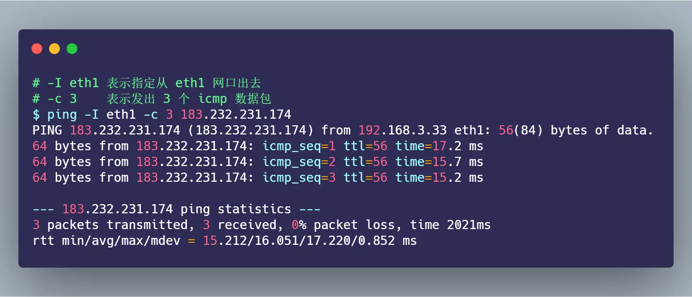
要抓取上面的ping的命令数据包，首先我们要知道ping数据包的是icmp协议，接着就使用tcpdump抓包时候就可以只抓取icmp协议的数据报：
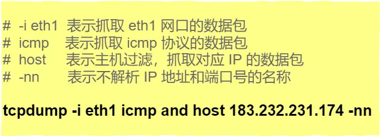
当tcpdump抓取到icmp数据包之后，输出的格式就是：
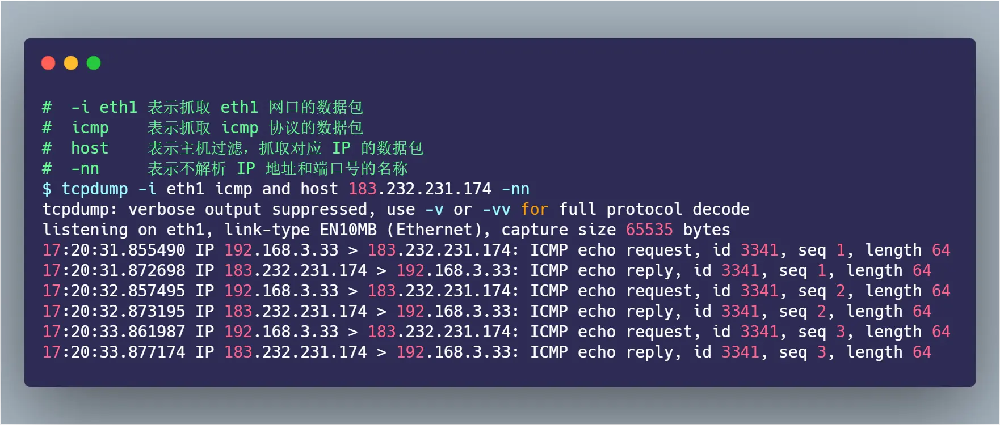
从tcpdump抓取的icmp的数据报可以看到，icmp echo的交互过程，首先发送方发起了ICMP echo request 请求报文，接收方收到回了一个ICMP echo reply响应报文，之后seq是递增的。
tcpdump一些常见的用法：
首先，看看常用的选项类，在上面的ping的例子中，我们用-i选项指定了网口，用-nn选项不对IP地址和端口名称解析，其他常用的选项如下表所示：
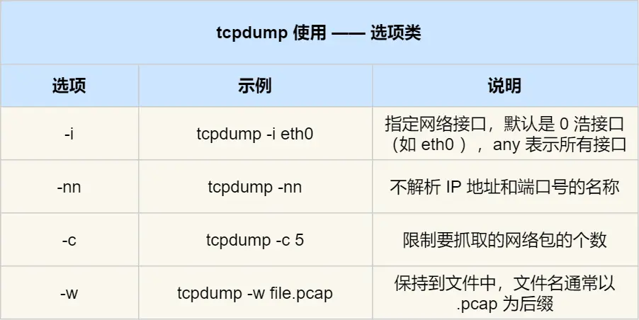
接下来，看下常用的过滤用法，在上面的ping例子中，用icmp and host 183.232.231.174表示抓取的是icmp协议的数据包，以及源地址或目标地址为183.232.231.174的包，其他常用的过滤选项如下表所示：
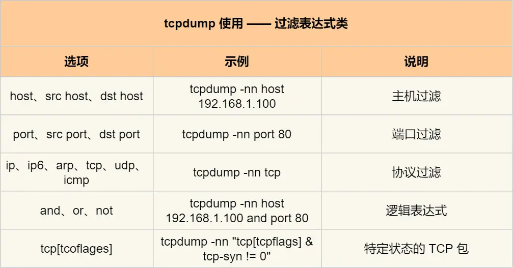
tcpdump虽然功能很请打但是输出不直观，所以在实际工作中还是徐亚哦用来住区数据包，不用来分析数据包，把抓取到的数据包保存成pcap后缀的文件名，接着用Wireshark工具来进行分析。
Wireshark除了可以抓包外，还提供了可视化分析网络包的图形化页面，同时还内置了一系列的汇总分析工具。
比如拿上面的ping例子来说，可以使用下面的命令把抓取到的数据包保存到ping.pcap文件中。
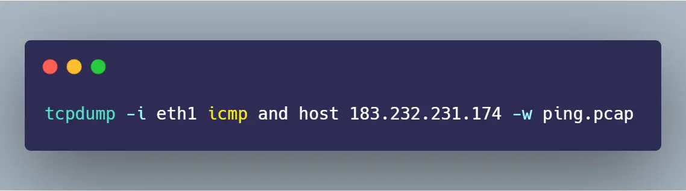
接着把ping.pcap文件拖到本地电脑上，再用Wireshark打开它，就可以看到图形化界面：
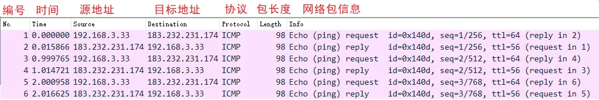
在Wireshark页面中，可以更加直挂的分析数据包，不仅展示各个网络包的头部信息，还会用不同的颜色来区分不同的协议，由于这次抓包只用ICMP协议，所以只有紫色的条目。
接着，在网络包列表中选择一个网络包在下面的网络包详情中，可以更清楚的看到，这个网络包在协议栈各层的详细信息，比如，编号1的网络包为例子：
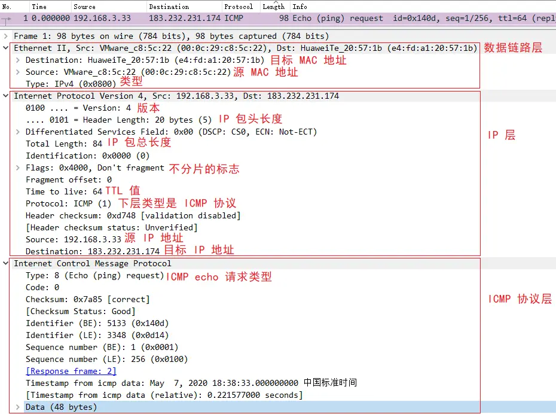
可以在数据链路层，看到MAC包头信息，如源MAC地址和目标MAC地址等字段。
可以在IP层，看到IP包头信息，如源IP地址和目标IP地址、TTL、IP包长度、协议等IP协议各个字段的数值和含义。
可以在ICMP层，看到ICMP包头信息，比如type、code等ICMP协议各个字段的数值和含义。
Wireshark用了分层的方式，展示了各个层的包头信息，比如Type、Code等ICMP协议各个字段的数值和含义。
Wireshark用了分层的方式，展示了各个层的包头信息，把不可见的数据报清楚的展示给我们。
从ping的例子中，我们可以看到网络分层就像有序的风格，每一层都有自己的责任范围和信息，上层协议完成交给下一层，最终形成一个完整的网络包。
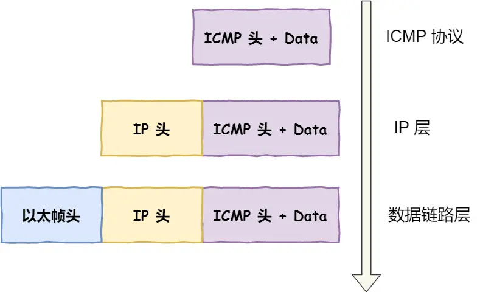
本次例子中，我们访问http://192.168.3.200服务端，在窗口1用tcpdump命令抓取数据包：
1sudo tcpdump -i any tcp and host 192.168.3.200 and port 80 -w http.pcap接着，在窗口2执行下面的curl命令：
11curl http://192.168.3.200最后，回到终端一，按下Ctrl + C停止tcpdump，并把得到的http.pcap下载掉本地电脑。
使用Wireshark打开http.pcap后，就可以看到Wireshark中的界面如下：
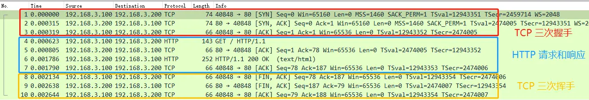
我们都知道HTTP是基于TCP协议进行传输的，那么：
最开始的3个包就是TCP三次握手建立连接的包。
中间的是HTTP的请求和响应的包。
最后的3个包时TCP断开连接的挥手的包。
Wireshark可以用时序图的方式来查看交互方式，在菜单栏中 （Staticstics） -> 流量包（Flow Graph），然后在弹出的页面中选择流量类型为 TCP Flows可以更清晰的看到，整个过程中TCP流的执行过程如下：
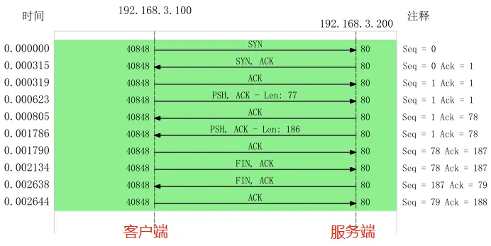
为什么是三次握手过程中的Seq是0？
实际上是因为Wireshark工具帮我们做了优化，默认显示的是序列号seq是相对值，而不是实际值。
如果想要看时机的序列号的值，可以右键菜单，然后看到协议首选项，找到Realtive Req后，把它给取消：
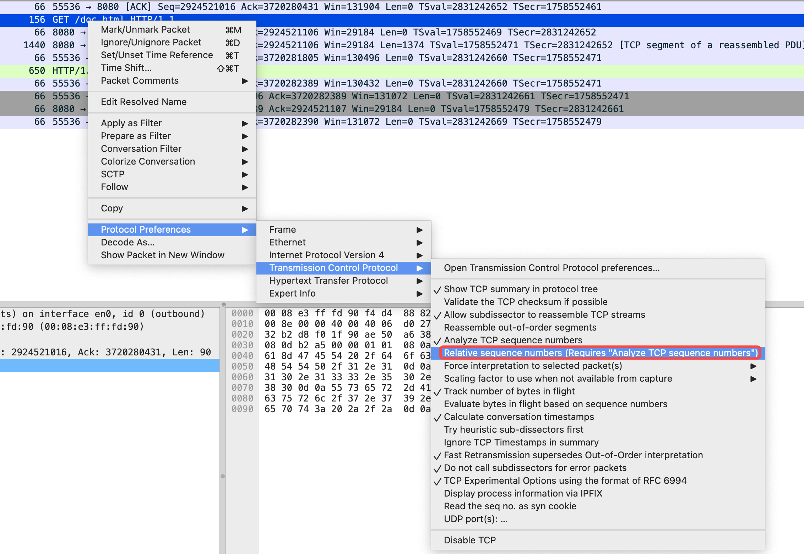
就可以看到实际的序列号了，序列号是一个随机值。
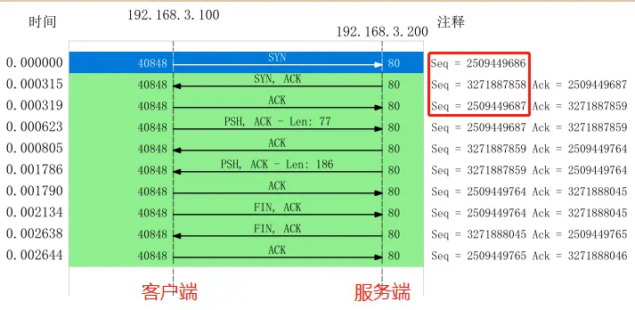
这其实跟我们看到的TCP三次握手和四次挥手很类似，作为对比，通产看到TCP三次握手和四次挥手的流程基本是这样的：
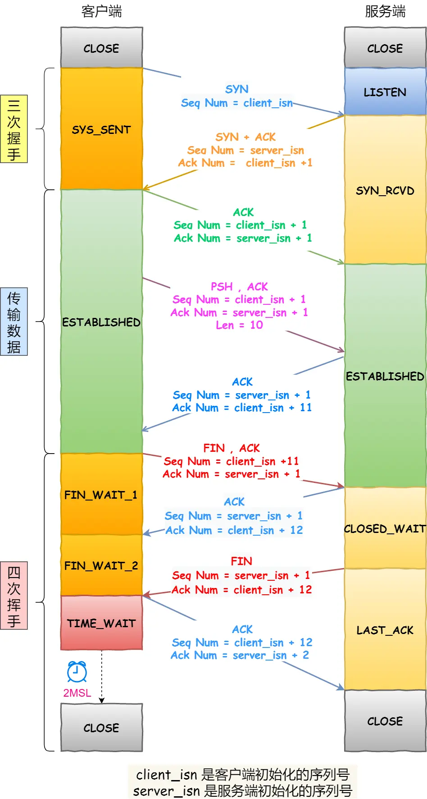
为什么抓到TCP挥手是三次？
当被关闭方在TCP挥手过程中，没有数据要发送并且开启了TCP延迟确认机制，那么第二和第三次挥手就会合并传输，这样就出现了三次挥手。
而通常情况下，服务端收到客户端的FIN后，很可能还没有发送完数据，所以就先回复客户端一个ACK包，而稍等一会儿，完成所有数据包的发送完 ，才会发送FIN包，这就是四次挥手。
TCP三次握手的过程会有三个异常的情况：
TCP第一次握手SYN包丢失，会发生什么？
TCP第二次握手SYN、ACK包丢失，会发生什么？
TCP第三次握手SYN包丢失，会发生什么？
实验场景，需要用2台虚拟机，一台作为客户端，关系如下：
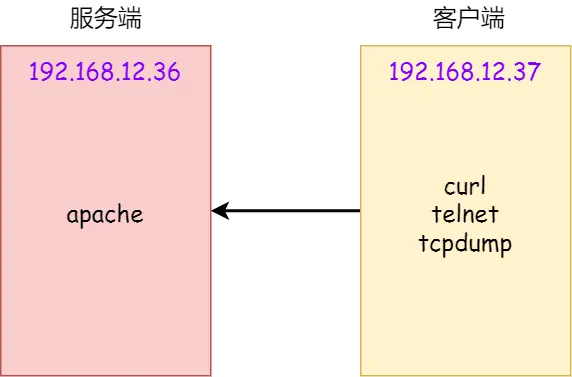
客户端和服务端都是CentOs 6.5 Linux，Linux 内核版本 2.6.32。
服务端192.168.12.36，apache web 服务。
客户端192.168.12.37。
可以在第一次握手SYN丢包的情况，可以直接拔掉服务端的网线，立即执行curl命令。
期间tcpdump的抓包命令如下：
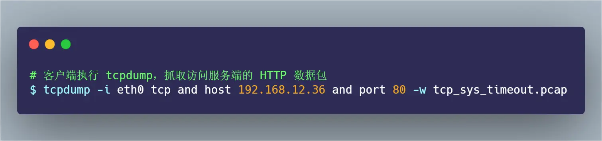
过了一会儿curl返回超时链接错误：
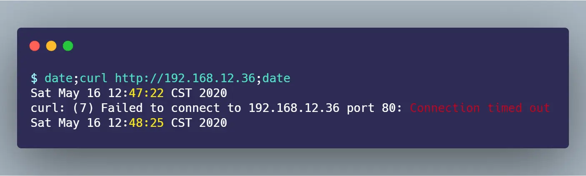
从date返回的时间，可以发现超时接近1分钟的时间后，curl返回了错误。
接着，把tcp_sys_timeout.pcap文件用Wireshark打开分析，显示如下图所示：
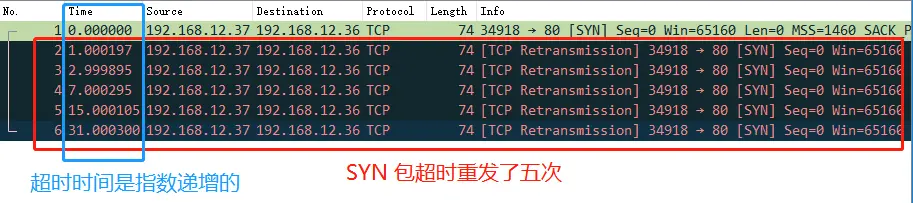
从上图可以看到，客户端发起了SYN包后，一直没有收到服务端的ACK，所以一直超时重传了5次，并且每次RTO超时时间是不同的。
第一次是在1秒超时重传。
第二次是在3秒超时重传。
第三次是在7秒超时重传。
第四次是在15秒超时重传。
第五次我是在31秒超时重传。
可以发现，每次超市时间RTO是指数（翻倍）上涨的，当超过最大超时重传次数之后，客户端不再发送SYN包，在Linux中第一次握手的SYN超时重传次数，是如下内核参数指定的：
11cat /proc/sys/net/ipv4/tcp_syn_retries接下来，我们继续做实验，把tcp_syn_retires设置为2次。
11echo 2 > /proc/sys/net/ipv4/tcp_syn_retries重传抓包后，在分析如下图所示：
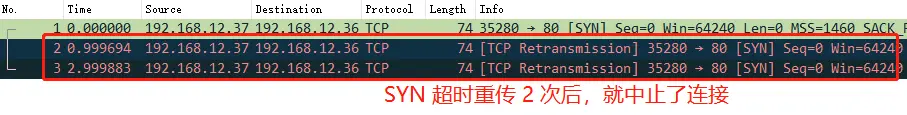
结论：通过实验1可以卡拿到当客户端发起的TCP第一次握手SYN包，在超时时间内没有收到服务端的ACK，就会超时重传SYN数据包，每次超市重传的RTO是翻倍上涨的，直到SYN包的重传次数到达tcp_syn_retires值后，客户端不再发送SYN包。
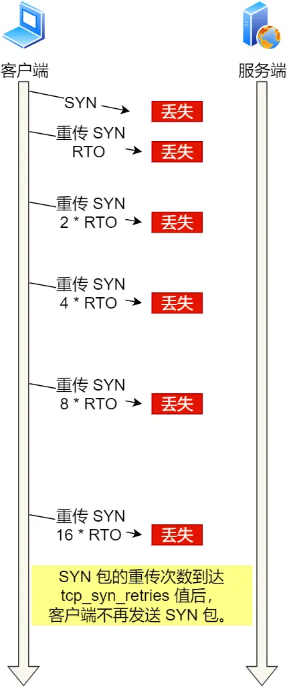
为了模拟客户端收不到服务端第二次握手SYN、ACK包，我们的做法是在客户端加上防火墙限制，直接粗暴的把来服务端的数据都给丢弃，防火墙的配置如下：
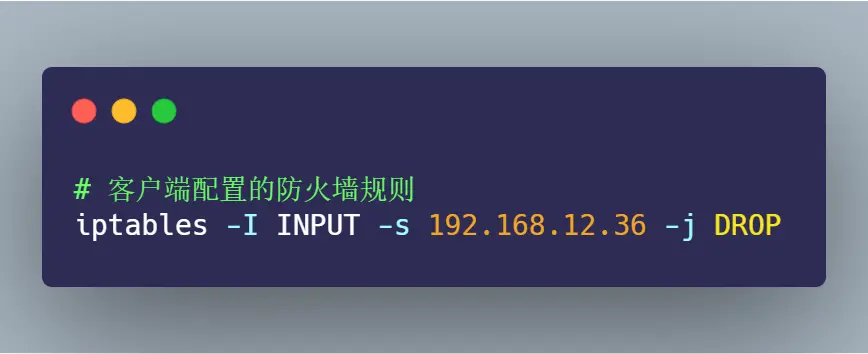
接着，在客户端执行curl命令：
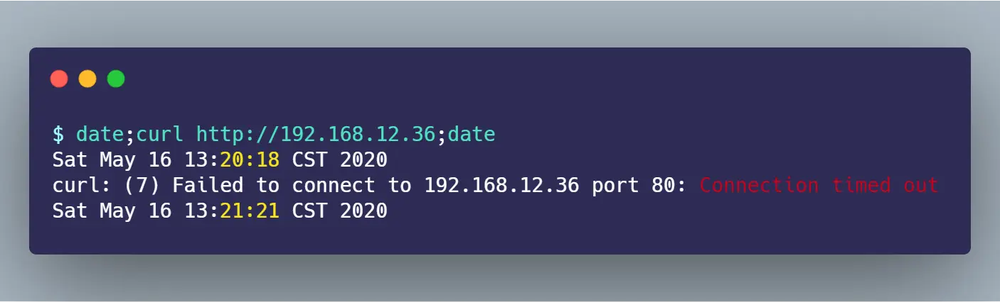
从date返回的时间前后，可以算出大概1分钟后，curl报错退出了。
客户端在这期间抓包的数据报，用Wireshark打开分析时序图如下图所示：
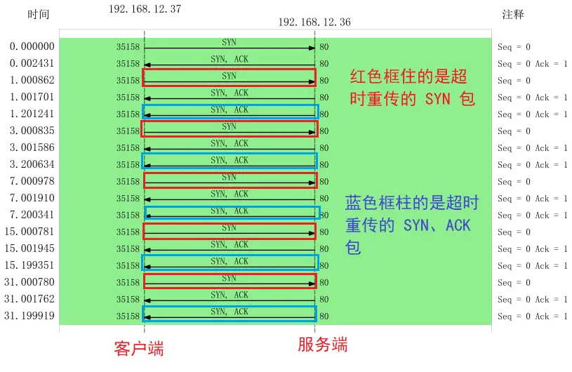
客户端发送SYN后，由于防火墙屏蔽了服务端的所有数据包，所以curl是无法收到服务端的SYN、ACK包当发生超时后，就会重传SYN包。
服务端收到SYN包后，就会回SYN、ACK包，但是客户端一直没有回ACK，服务端在超时后，重传了SYN、ACK包，接着一会，客户端超时重传的SYN包又抵达了服务单，服务端收到后，然后返回SYN、ACK包，但是SYN、ACK包的重传定时器没有被重置，还是在持续的重传，因为第二次握手在没有收到第三次我收到ACK确认报文，会继续重传，直到达到重传的最大次数。
最后，客户端SYN超时重传了5次，就不再继续发送SYN包了。
所以，我们可以发现，当第二次握手SYN、ACK丢包的时候，客户端会超时重传SYN包，服务端也会超时重传SYN、ACK包。
客户端设置了防火墙，屏蔽了服务端的网络包，为什么tcpdump还能抓到服务端的网络包呢 ？
添加iptables限制后，tcpdump是否能抓到包，要看iptables限制条件：
如果添加的INPUT规则，则可以抓到包。
如果添加的是OUTPUT规则，就抓不到包。
网络包进入主机后的顺序如下：
进来的顺序Wire -> NIC -> tcpdump -> netfilter/iptables。
出去的顺序iptables -> tcpdump -> NIC -> Wire。
tcp_syn_retires是限制SYN重传的次数，第二次握手SYN、ACK限制最大重传次数是多少？
TCP第二次握手SYN、ACK包的最大重传次数是通过tcp_synack_retires内核参数限制的默认值为5
11cat /proc/sys/net/ipv4/tcp_synack_retries为了验证SYN、ACK包最大重传次数是5次，我们继续实验，夏娜客户端的tcp_syn_retirs设置为1，表示客户端SYN、最大超时重传此时是1次，目的是为了防止多次重传SYN，把服务端SYN、ACL超时定时器重置。
接着，执行步骤：
客户端配置防火墙屏蔽服务端的数据包。
客户端tcpdump抓取curl执行时的数据包。
把抓取的数据报，用Wireshark打开分析显示的时序图如下图所示：
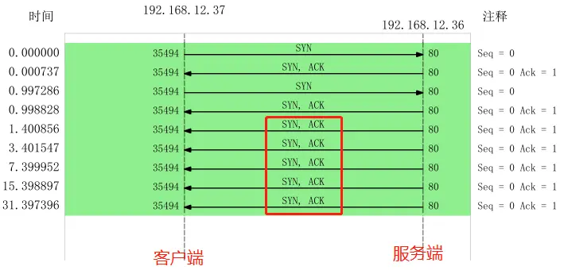
可以分析出：
客户端的SYN只超时重传了1次，因为tcp_syn_retires为1。
服务端引导大了客户端超时重传的SYN包后，由于一直收不到客户端的ACK包，苏搜易服务端一直重传SYN、ACK包，每次RTO也是指数上涨，一共超时重传了5次，因为tcp_synack_retires值为5。
接着，我们把tcp_synack_retires设置为2，tcp_syn_retires设置为1：
21echo 2 > /proc/sys/net/ipv4/tcp_synack_retries2echo 1 > /proc/sys/net/ipv4/tcp_syn_retries依然保持一样的步骤，抓取数据包来分析：
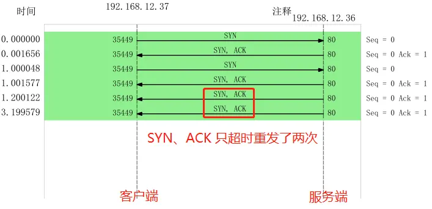
可见：
服务端的SYN包值超时重传了1次，符合tcp_syn_retires设置的值。
服务端的SYN、ACK超时重传了2次，符合tcp_syn_retires设置的值。
结论：通过实现2可以看到，当TCP第二次握手SYN、ACk包丢了之后，客户端SYN包会发生超时重传，服务端SYN、ACK也会发生超时重传。
客户端SYN包超时重传的最大次数，是由tcp_syn_retires决定的，默认值为5次，服务端SYN、ACK包超时重传的最大次数是由tcp_synack_retires决定的，默认值为5次。
为了模拟TCP第三次握手ACk包丢失，实验方法是在服务端配置防火墙，屏蔽客户端的TCP报文标志位是ACK的包，也就是说当服务端的TCP ACK的啊博文时就会丢弃。
iptables配置如下：
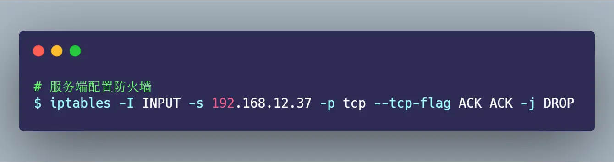
接着，在客户端执行命令如下tcpdump：
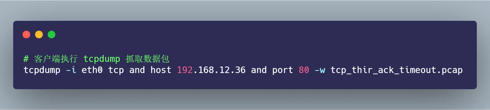
然后，客户端向服务端发起telnet，因为telnet命令会发起TCP连接，所以使用此命令做测试：
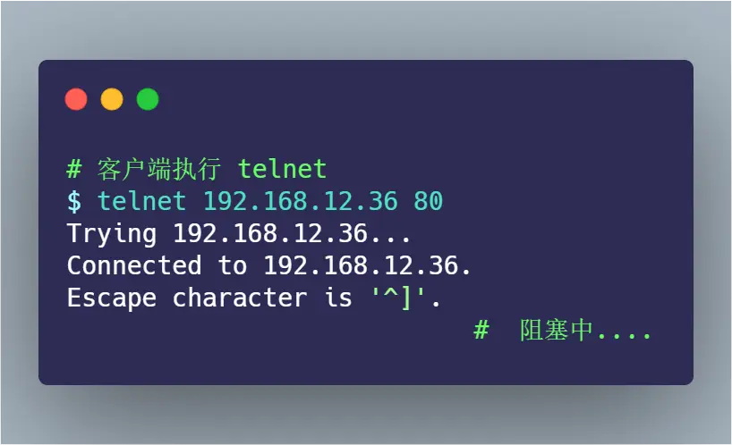
此时，由于服务端收不到第三次握手的ACk，所以一直处于SYN_RECV状态：
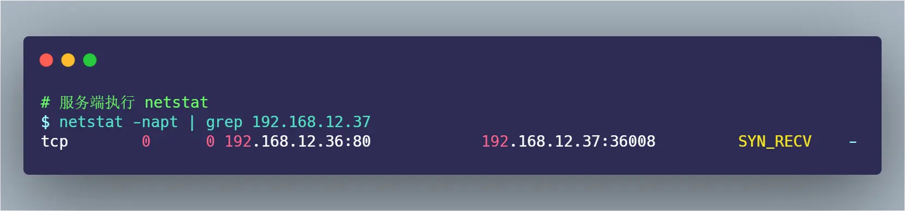
而客户端已经完成了TCP连接建立，处于ESTBLISHED状态：
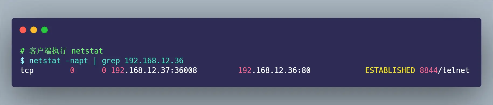
过了1分钟，观察发现服务端的TCP连接不见了：
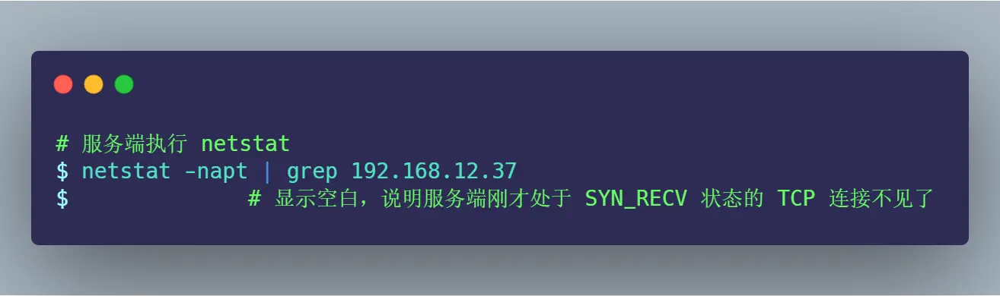
过了30分钟，客户端依然是出于ESTABLISHED状态：
接着，在刚才客户端建立的telnet会话，输入123456字符，进行发送：
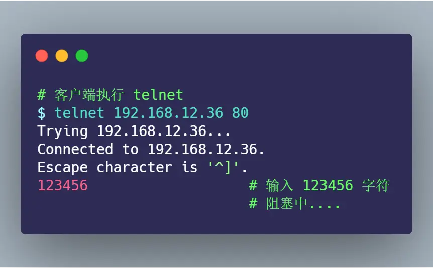
持续好长时间，客户端的telnet才断开连接：
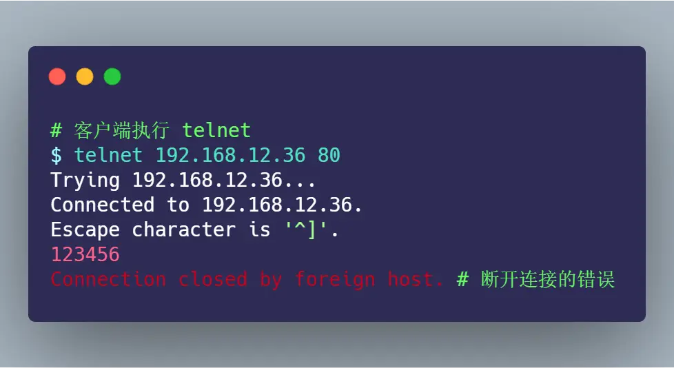
以上就是本次实验的现象了，存在两个疑点：
为啥服务端原本处于SYN_RECV状态的连接，过1分钟就消失了？
为啥客户端的telnet输入123456字符后，过了好长时间telnet才断开连接？
我们先分下下时序图：
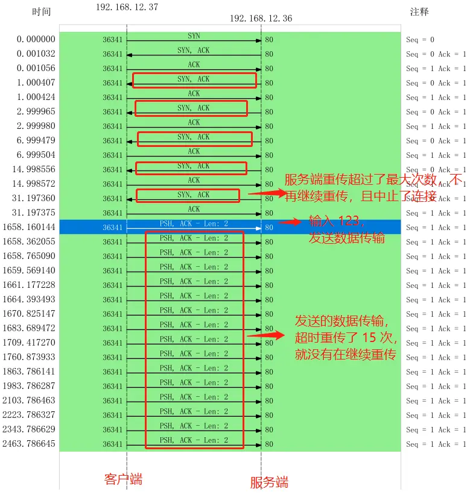
客户端发送SYN包给服务端，服务单收到后，回了个SYN、ACK包给客户端，此时服务端的TCP连接处于SYN_RECV状态。
客户端收到服务端的SYNACK包后。给服务端回了个ACK包，此时客户端的TCP连接处于ESTABLISHED状态。
由于服务端设置了防火墙，屏蔽了客户端的ACK包，所以服务端一直处于SYN_RECV状态，没有进入ESTABLISHED状态，tcpdump之所以能够抓到客户端的ACK包，是因为数据报进入系统的顺序是先进行tcpdump，后经过iptables。
接着，服务端超时重传了SYN、ACK包，重传5次之后，也就是超过tcp_synack_retires的值（默认为5），然后没有继续重传了，此时服务端的TCP连接主动中止了，所以刚才处于SYN_RECV状态的TCP连接断开了 ，而客户端依然处于ESTABLISHED状态。
虽然服务端TCP断开了，但过了一段时间，发现客户端依然处于ESTABLISHED状态，于是就在客户端的telnet会话中输入了1223456字符。
由于服务端的防火墙配置了屏蔽所有携带ACK标志位的TCP报文，客户端发送的数据报文，服务端并不会接受而是丢弃（如果服务端没有设置防火墙，由于服务端已经断开连接，此时收到客户发来的数据报文后，会回RST报文）。客户端由于一直收不到数据报文的确认报文，所以触发超时重传，在超时重传过程中，每一次重传，RTO的值是指数增长的，所以持续了好长的一段时间，客户端的telnet才报错退出了，此时共重传了15次，然后客户端也断开了连接。
通过分析，我们解除了两个疑点：
服务端在重传SYN、ACK包时，超过了最大重传次数tcp+synack_retires，于是服务端的TCP的连接主动断开了。
客户端向服务带你发送数据报文时，如果迟迟收不到数据报文的确认报文， 也会触发超时重传，一共重传了15次数据报文，最后telnet断开了连接。
TCP第一次我收的SYN报文超时重传最大此时是由tcp_syn_retires指定，第二次握手SYN、ACK包超时的重传此时是由tcp_synack_retires指定，那TCP建立连接后的数据包最大超时重传的次数有什么参数决定的呢？
TCP建立连接之后数据包传输，最大超时重传次数是由tcp_retires2指定，默认值是15次，如下：
11cat /proc/sys/net/ipv4/tcp_retries2如果重传了15次，TCP就会告诉应用层说，传输不过去。
如果客户端不发送数据的话，什么时候才会断处于ESTABLISHED状态的连接呢？
这里就需要提到TCP的保活机制，这个机制的原理：定义一个时间段，在这个时间段内，如果没有任何连接相关的活动，TCP保活机制会开始作用，每隔一段时间间隔就会发送一个探测报文，该探测报文包含的数据非常少，如果连续几个探测报文没有得到响应，则认为当前的TCP连接已经死亡，系统内核将信息通知给上层应用程序。
在Linux内核可以有对应的参数可以设置保活时间、保活探测次数、保活探测的时间间隔买一下都是默认值：
61#表示保活时间是7200秒，也就是2小时如果么有哦任何连接及相关的活动，则会启动保活机制2net.ipv4.tcp_keepalive_time=72003# 表示每次检测时间间隔是75秒4net.ipv4.tcp_keepalive_intvl=75 5# 表示检测9次无响应，认为对方是不可达的，从而中断本次的连接。6net.ipv4.tcp_keepalive_probes=9也就是说在Linux系统中，最少需要经过2小时11分15秒，才可以出现一个死亡的连接。
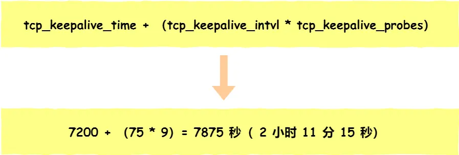
这个时间有点长，如果珠宝足够就，可以抓到探测报文。
结论：
在建立TCP连接的时候，如果第三次握手的ACk，服务端无法收到，则服务端就会断则处于SYN_RECV状态，而客户端会处于ESTABLISHED状态。
由于服务端一直收不到TCP第三次握手的ACK，则会一直重传SYN、ACK包，直到重传次数超过tcp_synack_retires值（默认5），服务单就会断开TCP连接。
而客户端则会有两种情况：
如果客户端没有发送数据包，一直处于ESTABLISHED状态，然后经过2小时11分15秒才可以出现一个死亡连接，于是客户端连接就会断开连接。
如果客户端发送el数据包，一直没有收到服务端的对该数据包的确认报文，则会一直重传数据包，直到重传次数超过tcp_retires值（默认15次）后，客户端就会断开TCP连接。
客户端向服务端发起HTTP GET请求时，一个完整的交互过程需要2.5个RTT时延。
由于第三次握手时可以携带数据的，这时如果在第三次握手发起HTTP GET请求，需要2个RTT的时延。但是在下一次（不是同个TCP连接的下一次）发起HTTP GET请求的时候，经历的RTT也是一样的如下图所示：
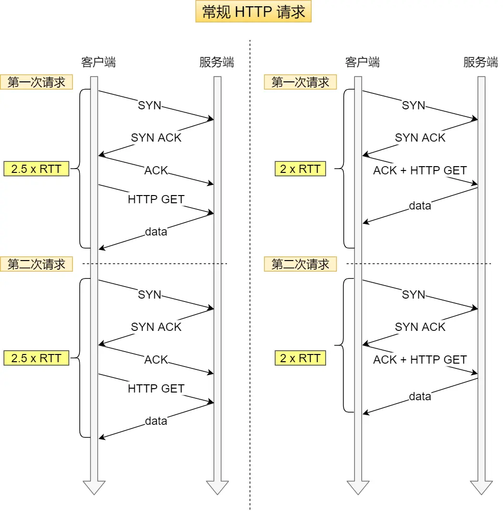
在Linux3.7内核版本中，提供了TCP Fast Open功能，这个功能可以减少TCP连接已建立的时延。
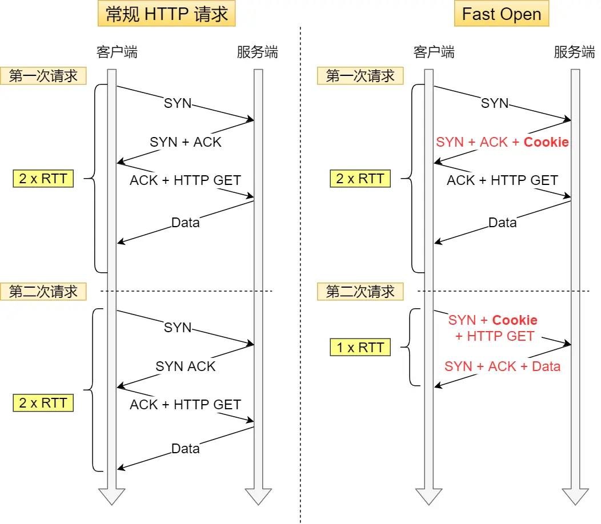
在第一次建立连接的时候，服务端在第二次握手的时候会产生一个Cookie已加密并通过SYN、ACK包一起发送给客户端，于是客户端就会缓存这个Cookie，所以第次发起HTTP GET请求的时候，还是需要2个RTT时延。
在下次请求的时候，客户端在SYN包带上cookie发给服务端，就可以提前跳过三次握手的过程，因为Cookie中维护了一些信息，服务端直接可以从Cookie中获取TCP的相关信息，这时候发起的HTTP GET请求就只需要1个RTT的时延了。
注意：客户端在请求并存储了Fast Open Cookie之后，可以不断重复TCP Fast Open直到服务器认为Cookie无效。
在Linux上如何打开Fast Open功能？
可以通过设置net.ipv4.tcp_fastopen内核的参数来打开Fast Open功能。参数说明如下：
0：关闭。
1：作为客户端使用FastOpen功能。
2：作为服务端使用Fast Open功能。
3：无论作为客户端还是服务端都可以使用Fast Open功能。
如下图所示，数据包7号，客户端发起了第二次TCP连接时，SYN包会携带Cookie，并且长度为5的数据。
服务端收到后，校验Cookie合法，于是就回了SYN、ACK包，并且确认应答收到了客户端的数据包，ACK= 5 +1 = 6。
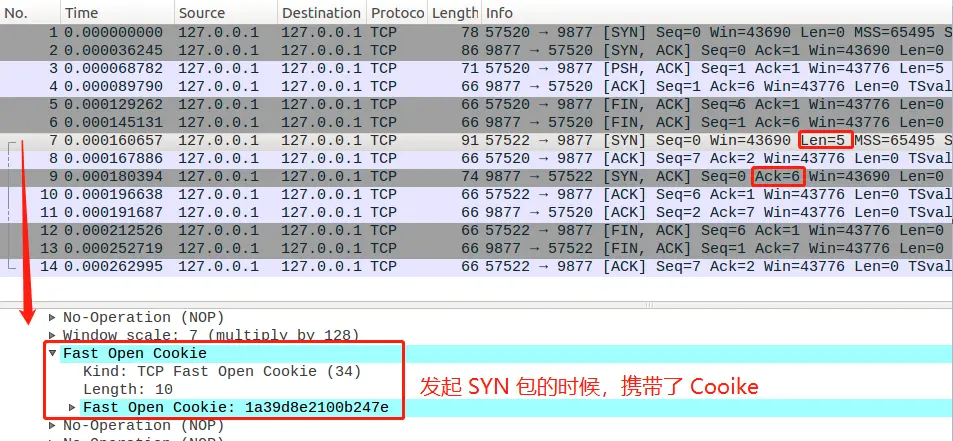
当接收方收到乱序的数据包时，会发送重复的ACK，以便告诉发送方要重发该数据包，当发送方收到3个重复ACK时，就会触发快速重传，立刻重复丢失数据包。
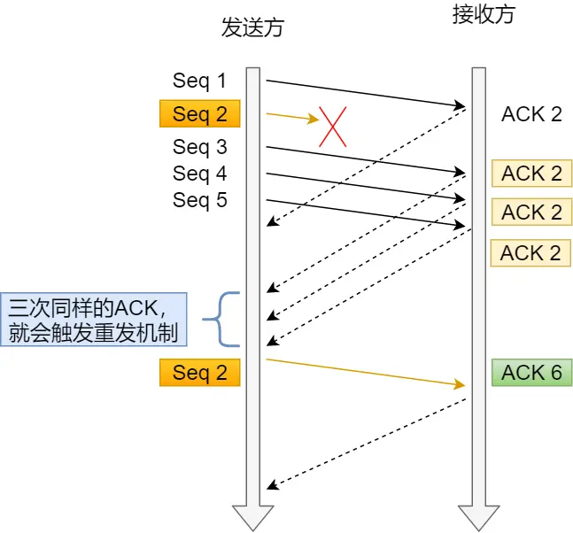
TCP重复确认和快速重传的一个案例，用Wireshark分析，显示如下：
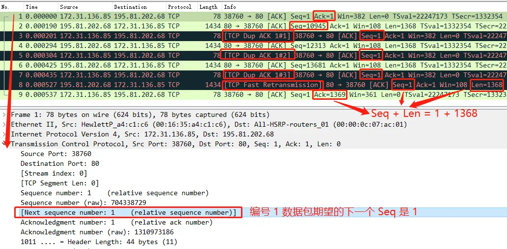
数据包1期望下一个收到的数据报的Seq是1，但是数据包2发送的Seq是10945，说明收到了乱序的数据包，于是回了数据包3，还是同样的Seq =1 ，Ack = 1，这表明是重复的ACK。
数据包4和6依然是乱序的数据包，于是就快速重传了Seq = 1、Len=1368的数据报。
当对方收到三次重复的ACK后，于是就快速重传了Seq = 1是期望的数据包，于是就发送了确认收到的快速重传的ACK。
注意：快速重传和重复ACK标志信息是Wireshark小计信息时Wireshark的功能，非数据包本身的信息。
以上案例在TCP三次握手协商的时候开启了选择性确认ACK，因此一旦数据包丢失并收到重复ACK，及时在丢失数据包之后还成功接收了其他数据包，也只需要重传丢失的数据报。如果不启用SACK，就必须重传丢失包之后的每个数据包。
如果要支持SACK，必须双方都要支持，在Linux下，可以通过net.ipv4.tcp_sack参数打开这个功能（Linux2.4版本之后默认是开启的）。
TCP为了防止发送方无脑的发送数据，导致接收方缓冲区被填满，所以就有了滑动窗口机制，它利用接收方的接收窗口来控制发送方要发送的数据量， 也就是流量控制。
接收窗口是由接收方指定的值，存储在TCP头部中，它可以告诉发送方自己的TCP缓冲空间的大小，这个缓冲区是给应用程序无数据的空间。
如果应用程序读取了缓冲区的数据，那么缓冲空间就会把读取到的数据给移除。
如果应用程序没有读取数据，则数据会一直滞留给缓冲区。
接收窗口接收到数据之后，应用层就很快的从缓冲区里读取数据，那么窗口大小会一直保持不变，过程如下：
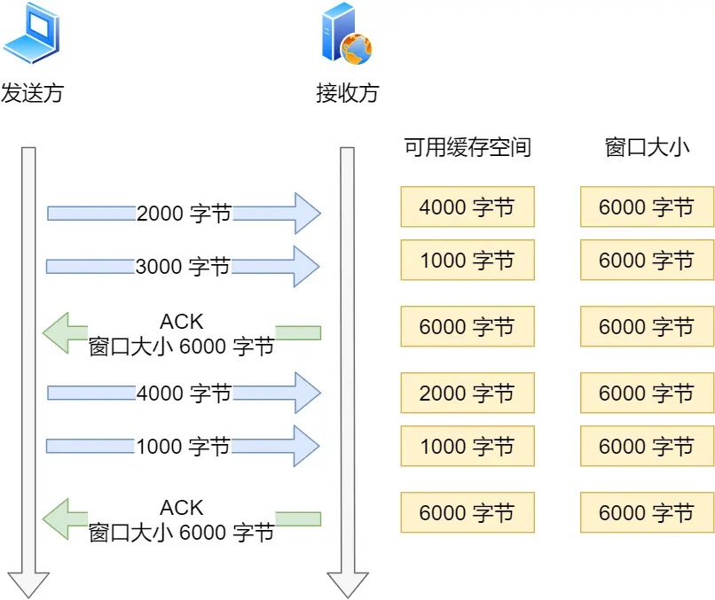
但是现实中服务器会出现繁忙的情况，当应用程度读取速度慢，那么缓存空间会慢慢被占满，于是为了保证发送方发送的数据不会超过缓冲区的大小，服务器会调整窗口大小的值，接着通过ACK报文通知给对方，。告知现在接收窗口大小，从而控制发送方发送的数据大小。
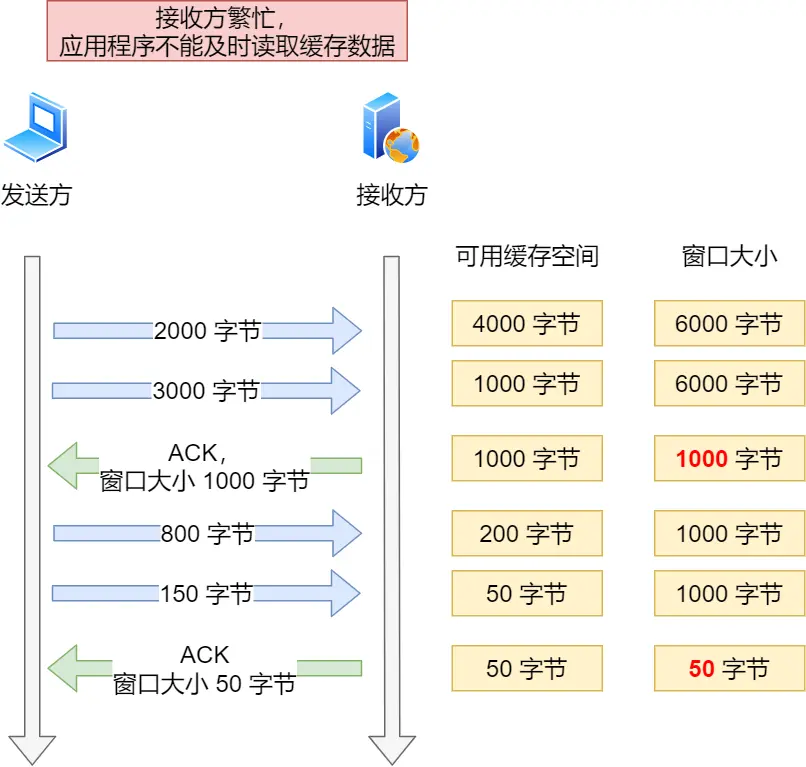
假设接收方处理数据的速度跟不上接收数据的速度，缓存就会被占满，从而导致接收窗口为0，当发送方接收到零窗口通知时，就会通知发送数据。
如下图所示，可以看到接收方的窗口大小在不断的收缩至0：
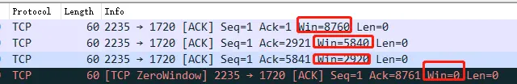
接着，发送方会定时发送窗口大小探测报文，以便及时知道接收窗口大小的变化。
如下图Wireshark分析的例子：
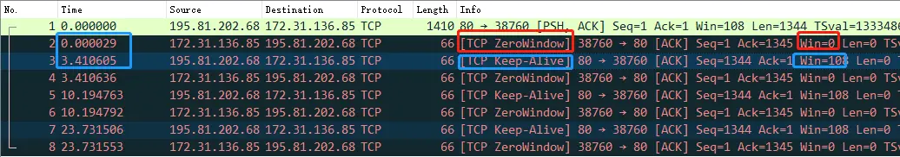
发送方发送了数据报1给接收方，接收方收到后，由于缓冲区被占满，回了个零窗口通知。
发送饭收到了零窗口通知后，就不在发送数据了，直到过了3.4秒，发送了一个TCP Keep-Alive报文，也就是窗口大小探测报文。
当接收方收到窗口探测报文后，就立马回一个窗口溶质，但是窗口大小还是0。
发送方发送窗口还是0，于是等待了6.8秒（翻倍）又发送了窗口探测报文，接收方依然还是回了窗口为0的通知。
发送方发现窗口还是0，于是继续等待了13.5（翻倍），又发送el窗口探测报文，接收方一人还是回了窗口为0的通知。
可以发现，这些窗口探测报文以3.4秒、6.5秒、13.5秒的间隔出现，说明超时时间回翻倍递增。
在Wireshark看到Window size也就是 ”win = “这个值表示发送窗口吗？
这个不是发送窗口，而是向对方声明自己的接收窗口。
可能会好奇，抓包文件里有Window size scalling factor，其实是算出实际窗口大小乘法因子，WIndow size value实际上并不是真实的窗口大小，真实窗口大小的计算公式如下：
Window size value * Window size scalling factor = Caculated window size。
对应的下图案例，也就是 32 * 2048 - 65536。
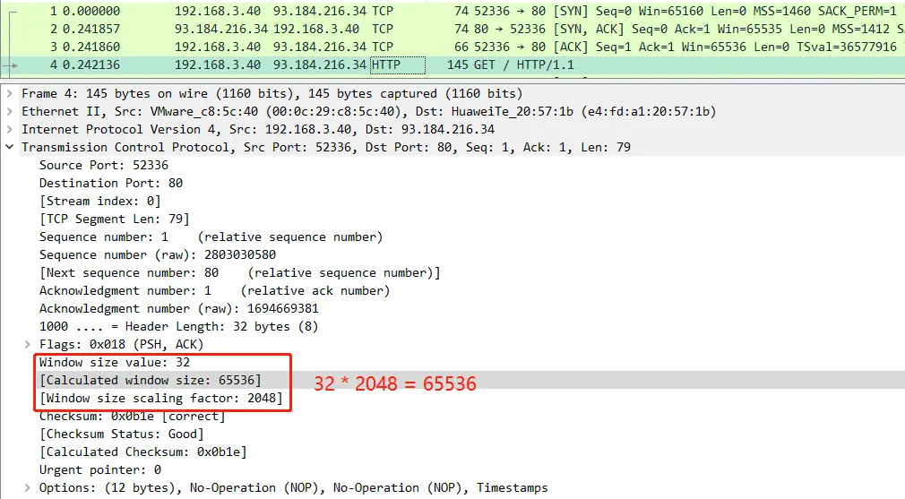
实际上Caculated Window size的值是Wireshark工具帮我们算好的，Window size scaling factor和Windows size value的值是在TCP头部，其中Window size scaling factor是在三次握手过程中确定的，如果你抓包的数据没有TCP三次握手，那可能就无法算出真实的窗口大小的值，如下图所示：
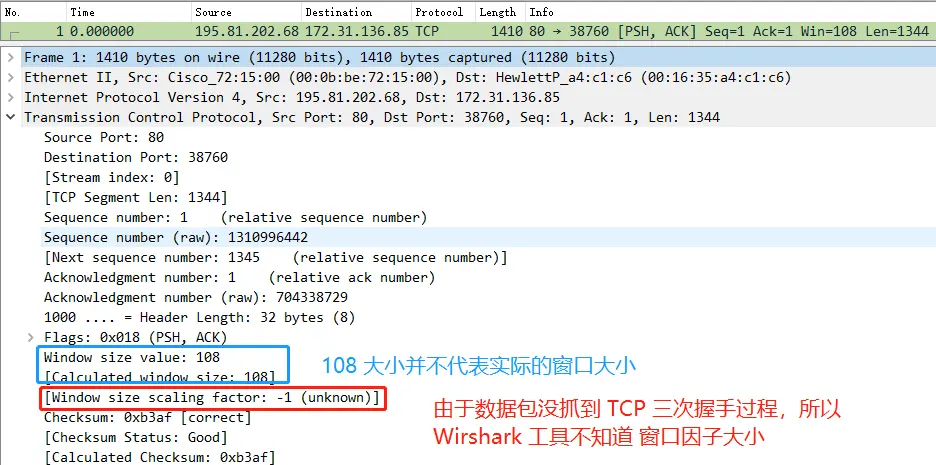
如何在数据包中看到发送窗口的大小？
很遗憾，是没有简单的方法看到窗口的大小的，但是可以被网络因素影响，也就是拥塞窗口，实际上发送窗口的值是min(拥塞窗口 ， 接收窗口)。
发送窗口和MSS有什么关系？
发送出窗口决定了一口气技能发多少自己，而MSS决定了这些自己要分多少包才能发完。
举个例子，如果发送窗口为16000字节的请款下，如果MSS是1000字节，那就需要发送1600 / 1000 = 16个包。
发送方在一个窗口发出n个包，是不是需要n个ACK确认报文？
不一定，因为TCP有累计确认机制，所以当收到多个数据包的时候，只需要应答最后一个数据包的Ck报文就可以了。
当我们TCP报文的承载的数据非常小的时候，例如几个字节，那么整个网络效率很低的，因为每个TCP报文中都会有20个字节的TCP头部，也会有20个字节IP头部，而数据只有几个字节，所以在整个报文中有效数据占有的比重就非常低。
这就好像快递员开着大货车发送一个小包裹一样很浪费。
那么久出现了常见的两种策略，来减少小报文的拆书，分别是：
Nagle算法。
延迟确认。
Nagle算法是如何避免大量TCP小数据报文的传输？
Nagle算法做了一些策略来避免过多的小随报文发送，这可以提高传输效率。
Nagle伪代码如下：
111if 有数据发送 {2 if 可用窗口大小 >= MSS and 可发送数据 >= MSS {3 like发送MSS大小的数据4 } else{5 if 有未确认的数据 {6 将数据放入缓存等待ACK7 }else{8 立刻发送数据9 }10 } 11}使用Nagle算法，该算法的思路就是延时处理，只有满足下面两个条件重点额任意一个条件，才能可以发送数据：
条件一：要等到窗口大小 >= MSS 并且 数据大小 >= MSS
条件二：收到之前发送的ack回包。
只要上面连个条件都不满足，发送方一直囤积数据，直到满足上面的发送条件。
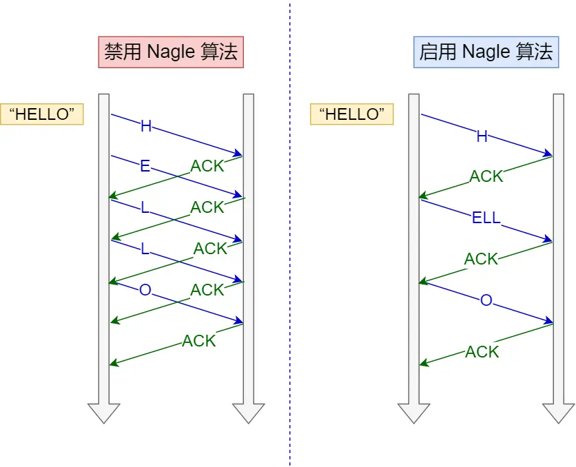
如上图中的右边的图，是发送数据的过程：
一开始由于没有已发送未确认的报文，所以就立刻发送了H字符。
接着，在还没到对H字符的确认报文时，发送方就一直囤积数据，直到收到确认报文后，此时没有已发送未确认的报文，于是就把囤积后的ELL字符一起发给了接收方。
待收到对ELL字符的确认报文后，于是把最后一个O字符发送了出去。
可以看到，Nalge算法一定会有一个小的报文，也就是在最开始的时候。
另外，Nagle算法默认是打开的，如果对于一些需要小数据包交换的场景的程序，比如telnet或ssh这样的交互性比价强的程序，则需要关闭Nagle算法。
可以在Socket设置TCP_NODELAY选项来关闭这个算法（关闭Nagle算法没有全局参数，需要根据自己的实际业务场景来判断是否要关闭）。
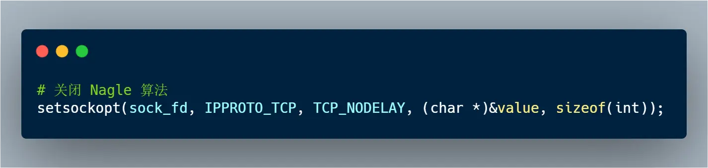
延迟确认时什么呢？
事实上没有携带数据的ACK，它网络效率也很低的，因为它也有40个自己的IP头和TCP头，但却没有携带数据报文。
为了解决ACK传输效率低idea问题，所以就会衍生出了TCP延迟确认。
TCP延迟确认策略：
当有响应数据要发送的时候，ACK回随着响应数据一起发送给对方。
当没有响应的数据要发送的时候，ACK将会延迟一段时间，以等待是否有响应的数据可以一起发送。
如果在延迟等待发送ACK期间，对方的第二个数据报文有到达了，这时候就会立刻发送ACK。
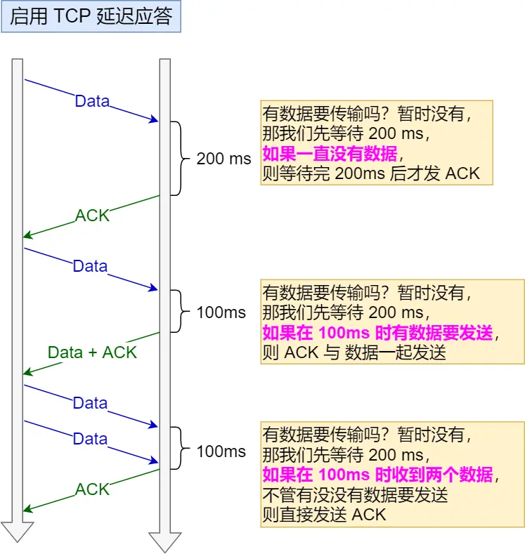
延迟等待时间是在Linux内核中定义的如下图所示：
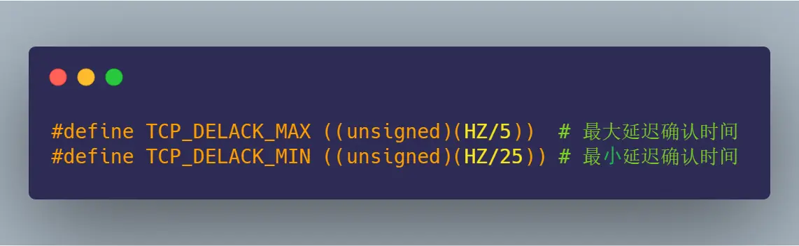
关键就是需要HZ这个数值的大小，HZ是跟随系统的时频率有关的，每个操作系统都是不一样的，在我的Linux系统中HZ大小是1000，如下图所示：
直到了HZ的大小，那么就可以算出：
最大延迟确认的实施按时200ms（1000/5）。
最短延迟确认时间是40ms（1000/25）。
TCP延迟确认可以在Socket中设置TCP_QUICKACK选项来关闭这个算法。
延迟确认和Nagle算法混合使用的时候，会产生啥问题？
当TCP延迟确认和Nagle算法混合使用的额时候，会导致耗时增长，如下图所示：
当发送方使用了Nagle算法，接收方使用了TCP延迟确认发生如下的过程：
发送方先发出一个小报文，接收方收到后，由于延迟确认机制，自己又没有发送的数据，只能干等着接收·发送方的下一个报文到达。
而发送方由于Nagle算法机制，在未收到第一个报文的确认前，是不会发送后续的数据的。
所以接收方只要等待最大的时间200ms后，才会ACK报文，发送方收到第一个报文确认报文后，也才可以发送后续的数据。
很明显，这两个同时使用的时候会造成额外的时延，这就是的网络很慢的感觉。
要解决这个问题就只有2个办法：
要么发送方关闭Nagle算法。
要么接收方关闭TCP延迟确认。